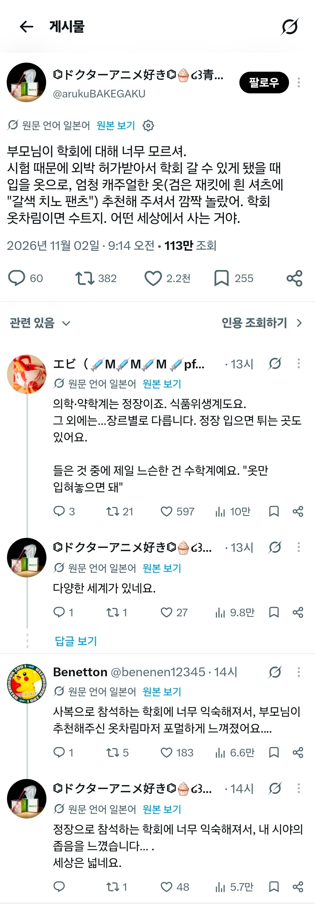
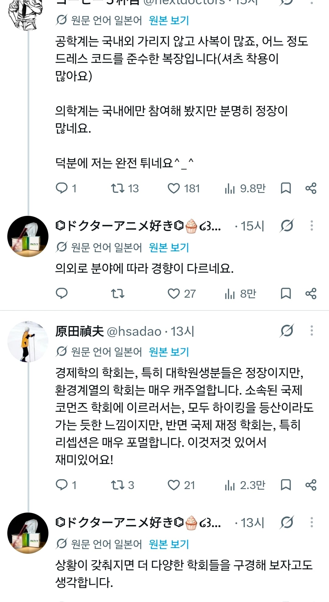
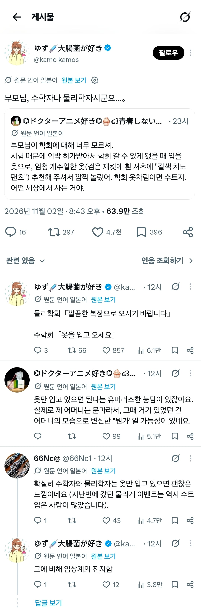

수학계 : 옷을 입고 오세요
ㅋㅋㅋㅋㅋ
수학계는 너무 루즈한가?ㅋㅋㅋ
한국쪽도 이러나? 궁금하다
관계자 개붕이 있음?



수학계 : 옷을 입고 오세요
ㅋㅋㅋㅋㅋ
수학계는 너무 루즈한가?ㅋㅋㅋ
한국쪽도 이러나? 궁금하다
관계자 개붕이 있음?
수학계는 천재너드 딱 그 느낌이네 ㅋㅋㅋ
수학회의 규정은 알몸으로 쓰여진다
학회 나갈 때 그냥 슬랙스에 상의는 깔끔하게만 입고 나감. 풀정장 너무 ㅈ같음... 근데 일본애들은 진짜 거의 맞춰 입고 오더라
국제 연합 학회였는데
일본은 풀정장에
아예 한 쪽에 탈의실 같은 부스를 운영했음
역바니걸 복장 입고 가는 학회는 없나
수학은 정신병자만 살아남나 뷰티풀마인드처럼
경영경제 쪽인데, 국제학회 기준으로 암묵적으로 상의에 단추 달려있으면 됨
대학원생쯤 되보이는 연배가 풀정장 입고오면 "쟤는 잡마켓 인터뷰 있구나" 함
눈코입 달려있고 말만 잘하면 아무도 신경 안썼음
ㅋㅋㅋㅋㅋ
어디쪽임?ㅋㅋㅋㅋㅋ
보통 상의에 단추달려있는 기준이지 않나? 짬좀차면 단추달린 반팔티도 있던디
교수도 아니고 대학원생이 정장입고 오면 좀 이상하지 ㅋㅋ
교육도 별 신경안썼던거같은데
옷은 입고 오세요
수학계는 딱 느낌 그대로네ㅋㅋㅋ
뭐 대충 셔츠에 면바지만 입어도 괜찮앗는데
기계는 빡센 수트까진 아니어도 다들 기본적으로 깔끔하게 입었던 거 같은데
후드 츄리닝 같은 것만 아니면 상관없다는 느낌
수학계는 옷을 안입는건가 아니면 옷이라고 부를수없는걸 입고오는건가
법학 ㅡ 풀정장 , 미디어커뮤니케이션 ㅡ 셔츠에 재킷 캐쥬얼바지.
수학계는 씻고오세요 일수도
발표나 토론이면 보통 정장인데 그거아니면 그냥 깔끔하고 단정하게 입음 되는듯
공대쪽 국제학회도 다른나라는 걍 카라티 입고 다니다 발표할 땐 콤비재킷 입는 정도인데 일본애들은 꼭 풀정장 입고 오더라.
그냥 이란 ㅇㄱㄸ들 같이 입으면 됨
수학계 옷만 입혀놓으면 돼ㅋㅋㅋㅋㅋ
발표자면 정장
전세계 국룰. 안지켜도 뭐라고는 안하는데
암튼 국룰
소매없는 등산복 상의와 짧은 반바지 입고 발표하신 분도 봤음 ㅋㅋ 심지어 박사심사때 슬리퍼 신고와도 띡히 아무도 신경안쓰던데
다 필요 없고 "편한 운동화" "편한 배낭" "총기있고 번뜩이는 눈" <- 이런 사람이 말 걸려고 하면 도망치셈
총기를 가지고 있으면 당연히 도망가야지..
교수님 운전기사 겸 따까리로 따라가봤는데 정장 풀로 입고감 그때 머리길러볼때였는데 자르고 가던가 묶으래서 묶었던 기억이 있더
하와이에서 열리는 학회는 하와이안 셔츠 입고 와야된다더라
목에 건 꽃 개수가 제일 중요함
수학계 애들은 학문성교에 오르가즘 느껴서 공부할때 바지벗고 공부하다보니 평소에 아랫도리를 잘 안입더라고
뭐 취향인데 나이드신 교수님도 상의는 포멀한 느낌에 넥타이까지 매 놓고는 바지는 청바지 ㅋ
??계 : 샤워 & 양치하고 와주세요
수학계는 분야만 다른 오타쿠 모임임.
어린왕자에서 비슷한 내용 나오지 않냐
의학 학회
발표자 외엔 보통 캐쥬얼
보통은 발표자는 정장
참석자는 뭐 체크남방에 청바지 이래 입어도 되지않나
반바지는 눈치주긴해
수학계는 대체 무슨일이 벌어지는거임
어차피 만나도 칠판이랑 신발밖에안봄
나 첫 학회갈때 나도 갈줄 모르고 청바지에 면티입고 갔다 끌려갔다
아무도 신경 안쓰더라
학회에서 칼정장 입고오는 애들은 일본밖에 없더라
룰루레몬 입고가면됨
?? : 제발 옷을 입고 와주세요ㅠㅠ
돈을 못벌어서..